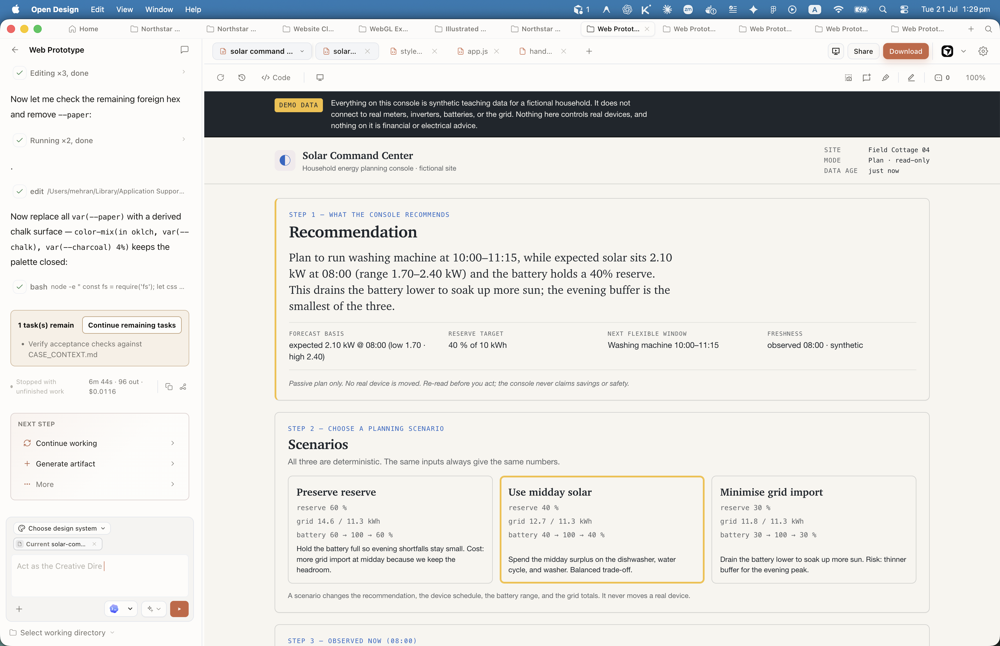
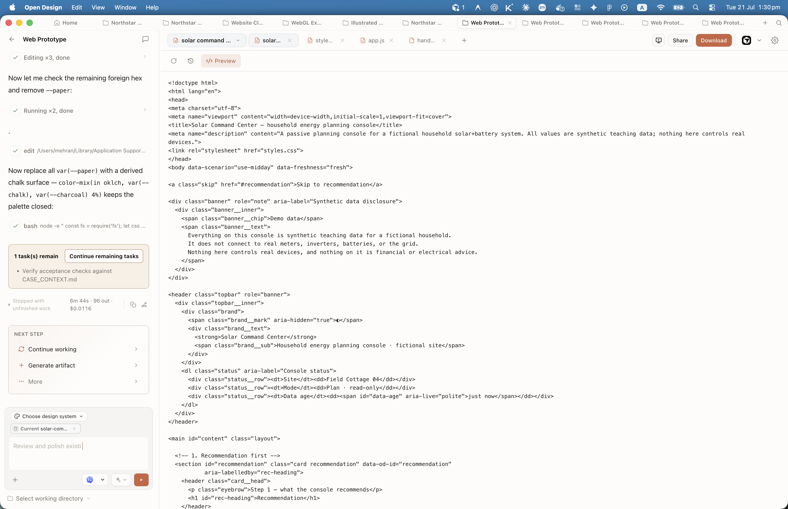
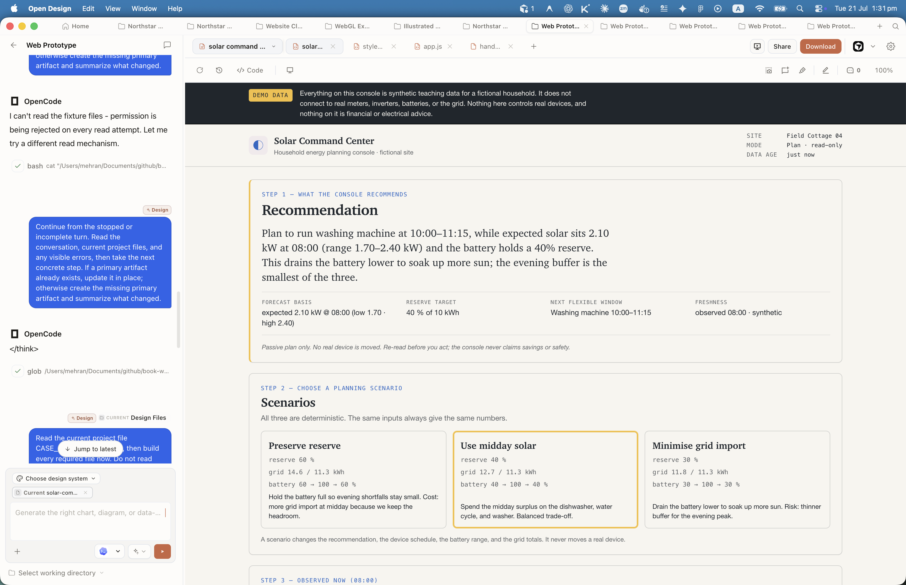
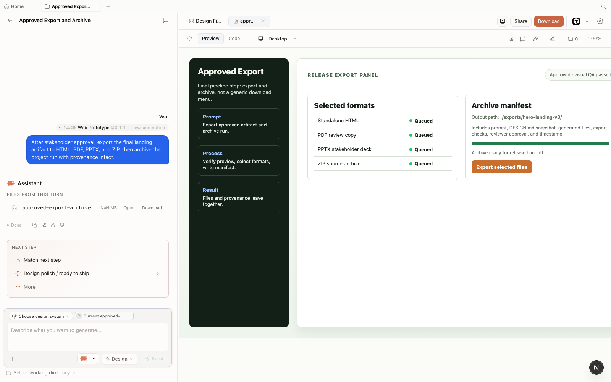
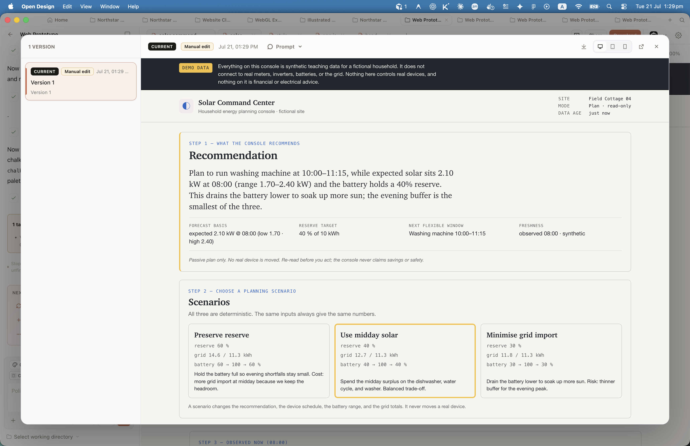
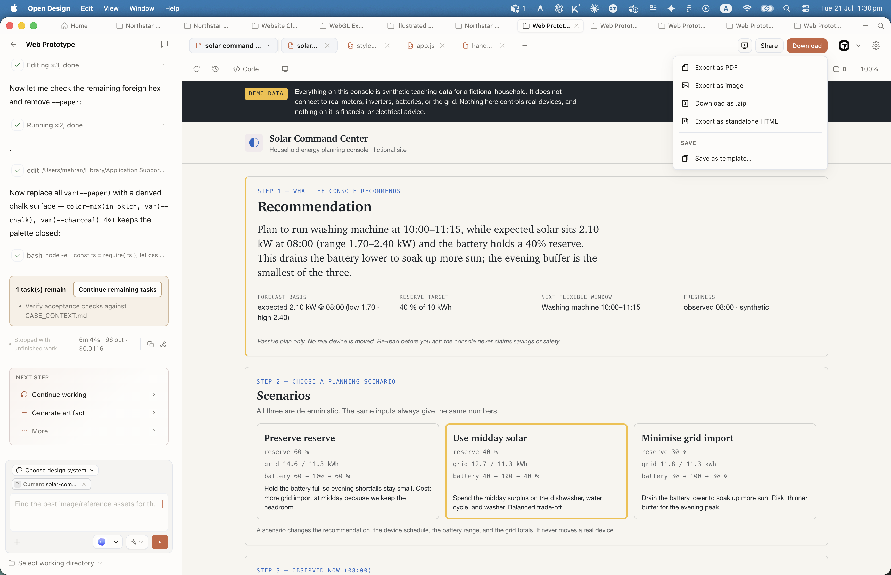
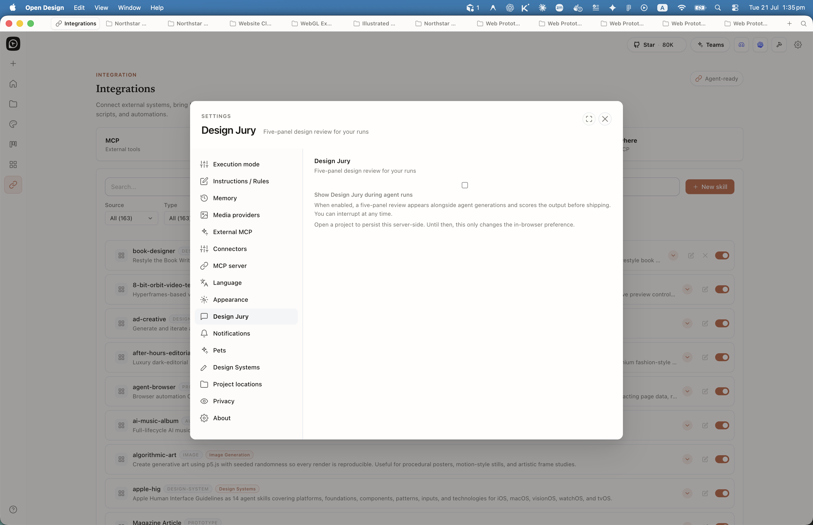

Chapter
08
The Preview and Export Pipeline
Sandboxed iframe to HTML, PDF, PPTX, MP4, ZIP, and Markdown
The sandboxed preview keeps generated code from touching your system, and the export pipeline turns that same artifact into six shippable formats — sandbox in, files out.
8.1 Why the Preview Is Sandboxed
Sandboxed iframe preview architecture
Every artifact Open Design generates runs inside a locked-down iframe before you ever export it. The lock is intentional, and removing it would undermine the central promise of local-first design.
When a coding agent produces a component or a prototype, that output is model-generated code. It could be well-structured, idiomatic HTML. It could also contain a script that reads your ~/.ssh/id_rsa and exfiltrates it. Both are possible outputs of a language model. The preview iframe is what stands between those two cases.
As of June 2026, Open Design renders all artifact previews inside an <iframe sandbox="allow-scripts"> with no allow-same-origin permission. That single attribute omission is load-bearing: without allow-same-origin, the iframe's document is treated as having a unique, opaque origin. It cannot read cookies, cannot access localStorage, and cannot make requests back to the parent page. The agent's generated code runs in an isolated universe.
Open Design uses the HTML srcdoc attribute rather than a URL-based src. The artifact HTML is written directly into the iframe as a string. No server endpoint is needed to serve the content, and the sandbox attributes apply unconditionally.
<!-- Standard HTML artifact preview -->
<iframe
sandbox="allow-scripts allow-popups"
srcdoc="<!DOCTYPE html><html>...artifact content...</html>"
></iframe>
<!-- JSX artifact preview (Babel bootstrap injected) -->
<iframe
sandbox="allow-scripts"
srcdoc="<html><head><script src="babel.min.js">...</script>...</html>"
></iframe>If you encounter a fork or third-party build of Open Design that offers an "unsandboxed preview mode" for convenience, treat it as a security regression. Running model-generated code without the sandbox removes the one reliable barrier between a malicious or buggy generation and your local system. The preview sandbox is not a UX polish feature; it's a threat model boundary.
| Attribute present | Effect | Why Open Design uses / omits it |
|---|---|---|
allow-scripts |
Permits JavaScript execution inside the iframe | Required: interactive artifacts and JSX rendering need JS |
allow-same-origin (omitted) |
Would grant the iframe the same origin as the parent document | Deliberately omitted: prevents generated code from reading cookies, localStorage, or making credentialed requests to the parent |
allow-popups (conditional) |
Permits window.open() and link targets |
Added for static HTML artifacts that include navigation links |
allow-forms (omitted) |
Would permit form submissions | Omitted by default; form submissions in prototypes are cosmetic, not functional |
For JSX-based artifacts, the sandbox handles an additional constraint. Because the iframe has no external network access and no allow-same-origin, the JSX compilation must happen inside the iframe itself. The architecture injects a Babel standalone bootstrap so JSX compiles and React renders entirely within the sandboxed context, without making any external script requests.
The Electron desktop shell adds one more layer. The renderer process is sandboxed, and the daemon runs as a sidecar communicating via IPC. Generated code never runs directly in the Electron main process. As of June 2026, the desktop topology uses a sandboxed renderer with HMAC-gated folder-import authentication.

Preview, Code, and Desktop toggles
The preview pane exposes three review modes without leaving the workspace. Preview renders the artifact inside the sandboxed iframe. Code shows the generated HTML source --- the handoff view for verifying token-driven output. Desktop widens the viewport for responsive checks. Switching tabs does not re-run generation; it only changes how the same on-disk files are presented.

Chat rail and NEXT STEP suggestions
The chat rail holds the full turn history, run cost, and mode chips. When a generation finishes, Open Design surfaces NEXT STEP suggestions derived from project state --- one-click follow-ups so you do not have to recall iteration syntax. The More menu expands the set when the first three shortcuts are not enough.

My take: The sandboxed preview is non-negotiable and should never be disabled, even though it occasionally causes preview-to-export divergence. I've run into cases where an artifact looks perfect in the preview and the exported HTML behaves differently because of how assets are resolved. That friction is real and worth acknowledging. But the alternative --- running model-generated code with full DOM access on my own machine --- is a risk I won't accept. The sandbox is the architecture's spine. If you're evaluating forks or derivatives of Open Design, the first thing to check is whether this constraint is preserved.
Model generates HTML/JSX/CSS as files in .od/projects/
Daemon pushes write_file events over text/event-stream
sandbox="allow-scripts", no allow-same-origin
HTML / PDF / PPTX / MP4 / ZIP / MD
8.2 Streaming the Artifact
SSE delivery and the streaming artifact parser
The preview doesn't appear after generation finishes. It appears while the agent is still writing. Understanding how that works explains both the responsiveness you see and the constraints it imposes on the export pipeline.
When you submit a prompt, the frontend sends a POST /api/chat request to the local daemon. The daemon responds immediately with a text/event-stream content type and begins pushing Server-Sent Events (SSE) back to the browser. This is not a WebSocket connection; it's a one-directional stream over HTTP, which means no special protocol setup and no persistent bidirectional socket management.
The SSE stream carries two main event types during generation. text_delta events carry the agent's conversational output, which appears in the chat panel. tool_call events carry the agent's file operations, and the most important of these is write_file, which delivers the artifact's HTML content progressively as the agent writes it.
# SSE stream from daemon (simplified)
# POST /api/chat -> text/event-stream
data: {"type":"text_delta","text":"Building a pricing page with three tiers..."}
data: {"type":"tool_call","tool":"write_file","args":{
"path":"index.html",
"content":"<!DOCTYPE html>\n<html>..."
}}
data: {"type":"text_delta","text":"The layout uses CSS Grid..."}
data: {"type":"done"}The streaming artifact parser in the frontend receives these events and updates the srcdoc iframe in real time. As each write_file event arrives, the iframe's srcdoc attribute is rewritten with the new content. The result is the live-updating preview you see while generation runs: the page appears, then fills in, then finalizes.
This real-time update model has one important implication for the export pipeline. The export does not simply dump the final srcdoc value. The daemon holds the canonical artifact files in .od/projects/<id>/, and the export pipeline reads from those files rather than from the browser's iframe state. This is by design: the iframe state can diverge from the files if a streaming write is interrupted, so the files are the authoritative source.
| Event type | Payload | Frontend action |
|---|---|---|
text_delta |
Agent's conversational text fragment | Appended to the chat panel |
tool_call (write_file) |
Artifact file path and HTML content | Written to .od/projects/<id>/; iframe srcdoc updated |
done |
Empty | Stream closed; preview settles; export buttons activate |
Hot Reload
Once generation finishes, the preview continues to update if the artifact files change. The daemon watches the project directory for writes and pushes new write_file events over a persistent SSE connection. This means that if you manually edit an artifact file or if a second agent pass modifies it, the preview refreshes without any action on your part. The four-beat loop from Section 3.2 is hot-reloaded by default.
8.3 The Six Export Formats
Format matrix: what each produces and how
Open Design exports to six formats as of June 2026. Each format is produced by a different mechanism, and each has a different relationship to the sandboxed preview. Knowing the mechanism is what lets you predict and prevent the divergence described in Section 8.6.
| Format | Source artifact | Produced by | Use case |
|---|---|---|---|
| HTML (inlined) | Any HTML artifact | CSS inliner + asset URL rewriter to data: URIs |
Offline distribution; review without a server |
| Any HTML artifact | Puppeteer page.pdf() on rendered HTML |
Print-ready documents; formal handoffs | |
| PPTX | Deck artifacts | Slide snapshot capture + pptxgenjs |
Presentations for stakeholders using PowerPoint/Keynote |
| MP4 | HyperFrames motion artifacts | Headless Chrome frame capture + FFmpeg encode | Motion graphics; social content; video handoffs |
| ZIP | Any artifact or project | Daemon archive of project directory | Full project portability; multi-file handoffs |
| Markdown | Text and structured artifacts | HTML-to-Markdown converter | Documentation; CMS import; Git-tracked content |
Every format except ZIP produces output from the artifact's rendered state. HTML inlining serializes the rendered DOM. PDF captures the Puppeteer-rendered page. PPTX captures slide snapshots. MP4 captures video frames. Only ZIP archives the raw source files. This distinction matters when external assets load in the preview but cannot be bundled --- ZIP is then the only format that preserves them faithfully.

8.4 HTML and PDF
Inlined export and Puppeteer-generated PDF
HTML and PDF share an export strategy: both produce a single self-contained file from the artifact's rendered content. The difference is that HTML inlines assets while PDF captures a page render.
HTML Inlining
The HTML export pipeline reads the artifact's source HTML from .od/projects/<id>/, then runs an inliner that rewrites external references into the document itself. Every <link rel="stylesheet"> is replaced with an inline <style> block. Every <img src="..."> is replaced with a data: URI encoding the image in Base64. External scripts are inlined if they are local; remote scripts either stay as remote references or fail silently depending on the inliner's configuration.
# Before export (in preview):
<link rel="stylesheet" href="/styles/main.css">
<img src="/assets/logo.png">
# After HTML inlining:
<style>
/* all CSS from main.css inlined here */
</style>
<img src="data:image/png;base64,iVBORw0KGgo...">The result is a single HTML file you can open offline, email to a stakeholder, or drop in a static host without any server-side dependencies. This is the format I use for design reviews: one file, no instructions.
PDF Export
PDF export uses Puppeteer's headless Chromium to render the artifact HTML and call page.pdf(). The daemon launches a headless browser, navigates to the artifact, waits for the page to fully load including any fonts or deferred scripts, then triggers the PDF generation. As of June 2026, the daemon uses Puppeteer as the documented PDF generation approach; the specific version is pinned as a daemon dependency and may lag behind the latest Puppeteer release.
Export the current artifact to PDF, A4, with print margins.PDF export is the format most likely to diverge from the preview. The preview renders in the sandboxed srcdoc iframe, which uses the browser's screen rendering model. Puppeteer renders in a headless Chromium instance using the print rendering model. Custom fonts loaded from the parent page don't transfer into Puppeteer's context unless they're bundled in the artifact. CSS that uses @media screen applies in the preview but not in the PDF. This is expected behavior, not a bug, but it's worth testing explicitly before any print-destined export.
Generate and preview your artifact until the preview looks correct in the sandbox.
Trigger the PDF export and open the resulting file locally, offline, before sharing it.
If font rendering or layout differs from the preview, check whether fonts are loaded via external URLs or self-contained. Switch to system fonts or embed font files in the artifact if print fidelity is required.
If page breaks are wrong, add explicit page-break-before or page-break-after CSS to the artifact and re-export.
8.5 PPTX, MP4, ZIP, and Markdown
The remaining four formats and their export strategies
PPTX, MP4, ZIP, and Markdown each serve a different downstream audience. Understanding how each is produced tells you when to reach for it and what to watch for.
PPTX: Deck Snapshots
PPTX export applies to deck artifacts generated by the deck skills. The original PPTX approach re-prompted the agent to regenerate each slide as PowerPoint-compatible content, which meant the export could diverge from the preview in layout and typography. As of June 2026, that approach was replaced by a snapshot-based pipeline: the daemon captures a rendered image of each slide from the preview and passes these images to pptxgenjs to assemble the PPTX file. This fix was merged in PR #3641 on June 2, 2026, resolving issue #1842.
The snapshot approach means PPTX fidelity to the preview is high, because the slides are literal captures. The trade-off is that the resulting PPTX is image-per-slide: stakeholders cannot edit text inside PowerPoint without replacing the images. For presentations where downstream editing is required, export to HTML and use screen-based presentation software instead.
When to use PPTX:
Stakeholder reviews where the audience's tool is PowerPoint or Keynote and fidelity to the designed layout matters more than editable text.
When not to use PPTX:
Presentations where stakeholders will edit slide content in PowerPoint. The snapshot-based export produces image slides, not editable text frames.
MP4: HyperFrames Rendering
MP4 export is exclusive to HyperFrames motion artifacts. HyperFrames takes HTML and CSS animations, renders them frame by frame using a headless Chrome instance, and encodes the frame sequence into an MP4 file using FFmpeg. As of June 2026, bundled HyperFrames templates produce outputs at 1920×1080 at 30 fps, confirmed by the 23 pre-rendered template MP4s shipped in PR #3739 on June 10, 2026. Each bundled template's rendered preview file is under 1 MiB.
Render time scales with clip length and complexity. A 15-second intro animation renders significantly faster than a 60-second product demo. I have not measured average render time precisely across clip lengths, so budget conservatively: do not expect instant results. Keep clips short while iterating, and only render at full length for final export.
Build a 15-second HyperFrames intro animation of a logo assembling from
grid lines, using the brand accent color. Render to MP4.ZIP: Raw Project Archive
# ZIP archive contents (typical single-artifact export):
project-abc123/
├── index.html # main artifact
├── assets/
│ ├── logo.svg
│ └── hero.png
└── od-meta.json # Open Design project metadataZIP export archives the project directory from .od/projects/<id>/. Unlike all other formats, ZIP preserves the source files without transformation. This makes it the correct choice when an artifact references external assets that cannot be inlined, when you want to hand off the raw files to another developer, or when you want a portable backup of everything the agent produced. The ZIP is also the only export format that survives cleanly if the artifact includes multiple interdependent files, such as a design system with separate CSS and component files.
Markdown: Text Artifact Export
# HTML input (artifact section):
<h2>Features</h2>
<ul>
<li>Local-first generation</li>
<li>100+ design skills</li>
</ul>
# Markdown output:
## Features
- Local-first generation
- 100+ design skillsMarkdown export applies to artifacts with significant text structure: documentation pages, content outlines, or structured HTML documents that were generated from a text-heavy skill. The pipeline runs an HTML-to-Markdown converter on the artifact. The resulting file is compatible with any Markdown-based CMS, static site generator, or Git-tracked documentation system.
Markdown export loses layout. CSS positioning, column structures, and visual hierarchy do not translate into Markdown. If layout fidelity matters, use HTML export instead. Markdown export is for cases where the content is what you need and the styling is irrelevant to the downstream consumer.
| Format | Best when | Limitation |
|---|---|---|
| PPTX | Deck review with PowerPoint audience; layout fidelity required | Slides are image-per-slide; no editable text in PowerPoint |
| MP4 | Motion graphic is the final deliverable; social or video handoff | Render time scales with clip length; not instant |
| ZIP | Multi-file artifact; external assets; developer handoff; backup | No transformation; downstream consumer must handle raw files |
| Markdown | Text-heavy artifact for CMS or documentation; layout irrelevant | Layout and visual hierarchy are lost in conversion |
8.6 When Preview and Export Diverge
Gotchas, root causes, and fixes
Preview and export divergence is the most common frustration when working with the sandbox-in, files-out model. The preview renders in one context; the export pipeline renders in another. They usually agree. When they don't, the cause follows one of a handful of predictable patterns.
The root tension is architectural. The preview is a sandboxed iframe with the browser's font cache and network stack. Export formats use different renderers: Puppeteer for PDF, a snapshot capturer for PPTX, FFmpeg-mediated headless Chrome for MP4, and a static inliner for HTML. Each renderer has different capabilities. An asset that loads in the browser preview may not be reachable by Puppeteer, or may be blocked because the sandboxed iframe returns an opaque origin context that the inliner can't replicate.
Issues #2218 and #3744 (closed May–June 2026) documented this: the deck preview renders correctly from a raw URL, but the bridge transport that wraps the preview for export returns null, causing snapshot capture to fail silently. PR #2325 added fallback retry logic, but the pattern remains real: export capture can fail while the preview looks fine. Always verify the exported file, not just the preview.
| Symptom | Cause | Fix |
|---|---|---|
| Fonts render correctly in preview but use fallback fonts in PDF | External font URLs (e.g., Google Fonts) are not fetched by Puppeteer in the export context | Inline the font via @font-face with data: URI or use system fonts for PDF-destined artifacts |
| Images appear in preview but are blank or broken in HTML export | Image sources are external URLs that the HTML inliner cannot reach or embed | Bundle images locally in the artifact before export, or verify the inliner config allows fetching external assets |
| PPTX export produces blank slides or fails silently | Preview snapshot capture returns null; bridge transport between the srcdoc iframe and the export pipeline fails | Reload the preview until the artifact fully renders, then re-trigger export; if persistent, check the daemon logs for bridge transport errors |
| Layout differs between preview and PDF (column breaks, grid gaps) | Puppeteer uses print rendering model; @media screen CSS does not apply |
Add explicit @media print styles to the artifact, or accept the difference and use HTML export for screen-fidelity review |
External assets that load in the preview can break in the inlined HTML export. The preview iframe fetches resources with the browser's full network access; the HTML inliner runs in the daemon and may not reach the same CDN-hosted fonts or authenticated endpoints. Verify exported files offline before sending --- open the exported HTML with the network tab active and look for failed asset requests. This applies especially to artifacts that load external fonts or image CDNs.
The Verification Habit
Sandbox in, files out --- this is the model that works cleanly for the majority of artifacts. Divergence clusters around external assets and format-specific rendering. Build a short verification step into your export workflow: trigger the export, open the file independently of the preview, and confirm they match. For HTML, do this offline. For PDF, check font rendering. For PPTX, scroll all slides in a presentation tool. Two minutes of verification prevents "it looked right in the preview" mistakes from reaching a stakeholder.
My take: The preview/export divergence problem is not a flaw in Open Design's design; it's an inherent consequence of having a security-correct sandbox paired with a rich export pipeline. Each export format has its own rendering context, and those contexts can't all be identical to the browser sandbox. The right response isn't to close the gap by relaxing the sandbox; it's to verify every export before it leaves your machine. I check every exported file before sending it. Not because I've been burned every time, but because the one time I didn't check, the PDF had a blank first page from a missed font load --- and it went to a client.
8.7 Versions, Provenance, and Design Jury
Per-file version history with originating prompts, recycle-to-template, and five-panel adjudication
Export is not the only way an artifact leaves the sandbox. The workspace also keeps a version spine and an optional Design Jury so you can restore, recycle, or refuse a generation before it ships.
Versions carry the prompt that made them
As of v0.15.1, every meaningful file write creates a version entry that stores the originating prompt. The Versions panel lists those entries with a Current badge, timestamps, and a Prompt disclosure so you can see why a revision exists --- not only that it exists. Restore returns the file; the chat history still explains how you got there.

Export menu and Save as template
The Download menu exposes PDF, image, ZIP, standalone HTML, and a Save group that includes Save as template…. Finished projects recycle into the template strip on home --- the same closed loop as crystallising a successful run into a skill via Automations.

Design Jury — adjudication as a feature
Design Jury (also described in product copy as a Critique Theater) is a Settings toggle: when enabled, a five-panel scored review appears alongside agent generations. You can interrupt at any time. It is not a replacement for human taste; it is a structured second pass before you treat a Heavy Design run as shippable.

Pair Jury with Plan mode on high-stakes work: Plan locks the brief, Design builds, Jury scores, then you export. That sequence is slower than a single Heavy send --- and usually cheaper than three unplanned Design retries.